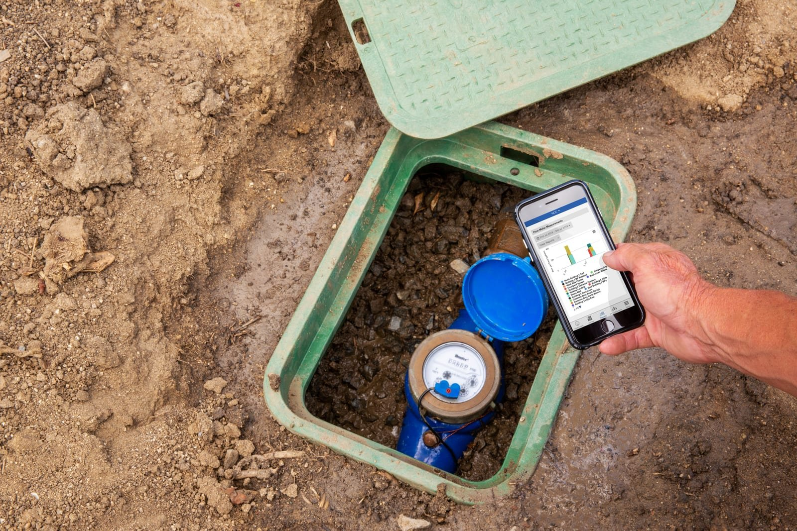
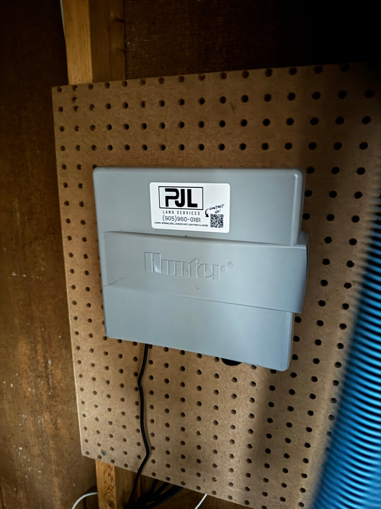

A cracked mainline on an automatic system doesn't announce itself. It runs on the next scheduled cycle, and the one after that, quietly pushing water into the ground — or across the driveway — until something forces you to notice. For most homeowners that "something" is a water bill two or three times higher than normal, or a soft, sunken patch of lawn that wasn't there in April. By then the system has run the leak a dozen times.
A flow sensor is the one component that changes the timeline. Instead of finding out three weeks later, you get a notification on your phone the first time the numbers don't add up.
An irrigation flow sensor measures how much water is moving through your sprinkler mainline and compares it against what each zone should be using. When the two don't match — a burst pipe dumping water, a stuck valve, a sheared-off head — a smart controller like Hydrawise flags it, alerts your phone, and can shut the zone down.
What is an irrigation flow sensor?
A flow sensor (also called a flow meter) is a small inline device plumbed into your irrigation mainline. It counts the water passing through it in real time. On its own it's just a gauge — paired with a smart controller, it becomes an automatic leak-detection system that watches every zone, every cycle.
Physically, it sits on the mainline downstream of the shut-off — a short fitting spliced into the poly line, usually in or near the valve box. It sends a pulse signal to a sensor input on the controller. Every pulse is a known volume of water, so the controller always knows the live flow rate in litres or gallons per minute. Nothing about it is exotic; it's a metering fitting and two wires. What makes it useful is the controller reading it.

How does flow monitoring actually catch a leak?
The controller learns each zone's normal flow rate over its first cycles. From then on it watches the live rate against that baseline. A rate that's too high means a break or a sheared head dumping water; too low means a clog, a closed valve, or lost pressure. Either reading trips an alert.
It's worth knowing that a Hydrawise system watches for faults in two separate ways, and they catch different problems:
- Built-in solenoid-current monitoring (no flow meter needed). The Hydrawise controller constantly measures the electrical current going to each zone valve. If a wire is cut, a solenoid has failed, or there's a short, it tells you which zone is misbehaving. This is standard on the controller.
- Flow monitoring (this is the part that needs a flow meter). The current check can't see water — a pipe can burst while the wiring reads perfectly fine. That's what the flow meter is for. It catches the hydraulic faults: a mainline break, a zone running way over its normal flow, a head that got driven over.
Together they cover both halves of "something's wrong": the electrical side and the water side. That distinction is the difference between a gauge and a system.

What problems does it actually catch?
The failures a flow sensor is built to catch are exactly the expensive, slow-to-notice ones:
- A mainline break between the shut-off and the valves. This is the worst case — it can run on every zone, every cycle, undermining walkways and flooding beds. A flow sensor catches it on the first run.
- A valve stuck open. A zone that won't shut off waters 24/7 until someone notices. Flow that never drops to zero is an immediate flag.
- A sheared or driven-over head. A snapped riser turns into an open pipe gushing at full flow. The zone's rate spikes; you get the alert.
- A slow underground leak. A small split in a fitting shows up as a zone's flow creeping upward week over week — long before it surfaces as a wet spot.
There's a local wrinkle worth calling out. Across the GTA, most breaks happen in spring, on the first runs after winter. Freeze-thaw cycles work on any water left in the lines, and heavy clay soil grips and shifts pipe as it freezes. A flow sensor is most valuable in exactly the window when you're least likely to be out walking the lawn watching for problems — the first cool weeks the system comes back on.
Do you actually need a flow sensor?
Not every system needs one. A small, attended residential system where you'd spot a wet lawn within a day may not justify it. Where it earns its keep: large or multi-zone properties, estate-scale lots, systems that run while you travel, and any commercial or condo site where a leak can run unwatched for days.
We'd rather tell you straight than sell you hardware you don't need. The properties where a flow sensor pays for itself fast:
- Large or estate lots — King City acreage, multi-zone systems where a break in a back run isn't visible from the house.
- Commercial and condo sites — where nobody's personally watching the lawn and a leak becomes a facilities problem. (See our commercial irrigation page.)
- Snowbird and travel-heavy households — the system runs itself while you're away; the sensor is the thing watching it.
- Anyone already burned once — if you've had the surprise-bill or the sinkhole, you already know what it's protecting against.
If you're a modest four-zone city lot and you're home most weeks, it's a nice-to-have, not a need. That's an honest answer, and it's the one we'll give on site.
Can you add a flow sensor to a system you already have?
Yes — as long as you have, or add, a compatible smart controller. The flow meter installs on the mainline and wires into a spare sensor input on a Hunter HPC-400 (Hydrawise). On an older non-smart timer, the controller comes first — the sensor is part of that same upgrade, not a separate project.
The good news is it reuses everything already in the ground: your pipe, your valves, your heads. It's a controller-level upgrade, not a rebuild. PJL is a Hydrawise Authorized Installer and Hunter-certified, so the meter, the wiring, and the alert setup in the app all get done in one visit. A Hydrawise retrofit starts at $595 by zone count; the flow meter is added on top and quoted on site, because the price depends on your mainline size and how the valve box is laid out.

Turn your system into one that watches itself.
A Hunter HPC-400 (Hydrawise) skips watering when it rains, flags a wiring fault the moment it happens, and — with a flow meter added — pings your phone when a pipe breaks. It reuses your existing wiring, valves and heads, so it's a swap at the controller, not a rebuild.
See the Hydrawise WiFi upgradeWhen should you call us?
Not sure whether your system's a candidate — or already seeing a bill that doesn't make sense? Start with our AI diagnostic tool; if its read matches what we find on site, you get one hour of repair labour free. Or call (905) 960-0181 or book online. In season we're same-day across the York Region core — Newmarket, Aurora, King City and immediate surroundings. If a leak has already surfaced, here's our sprinkler repair page.